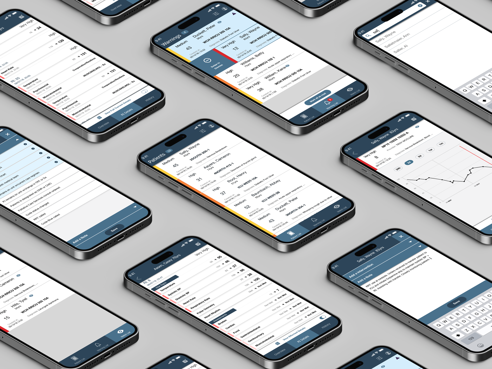
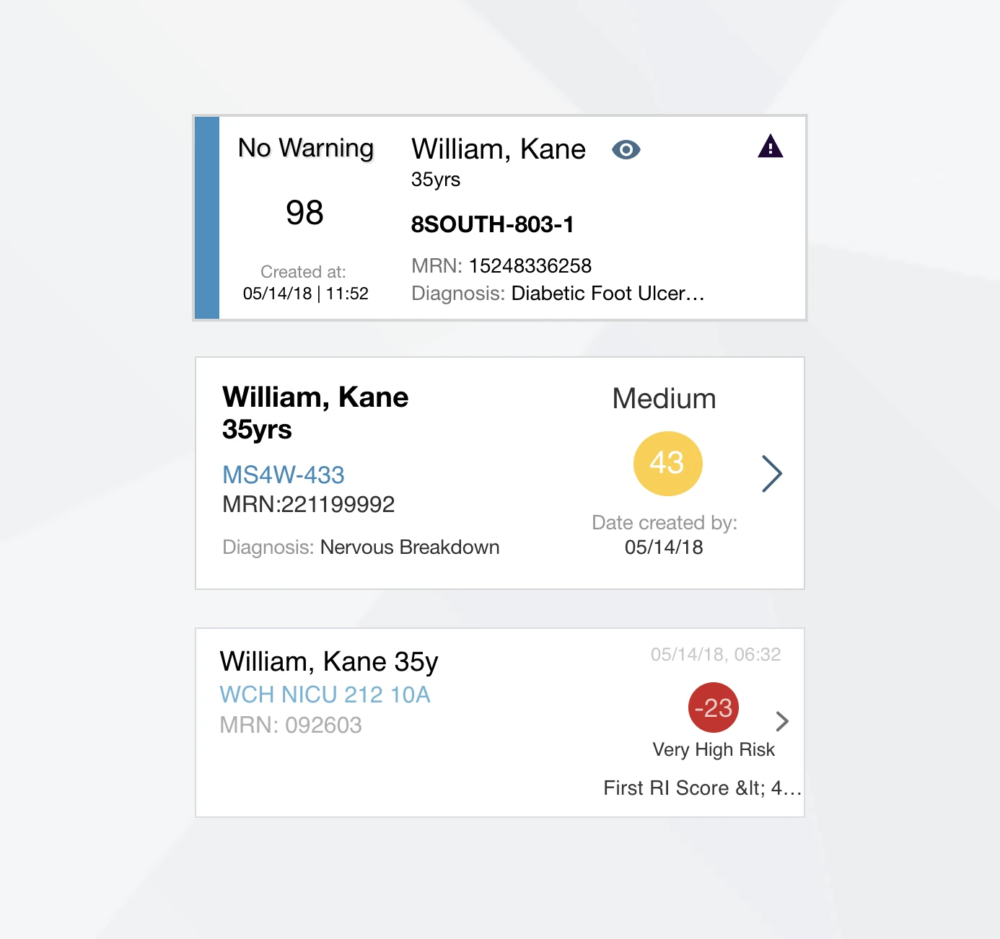
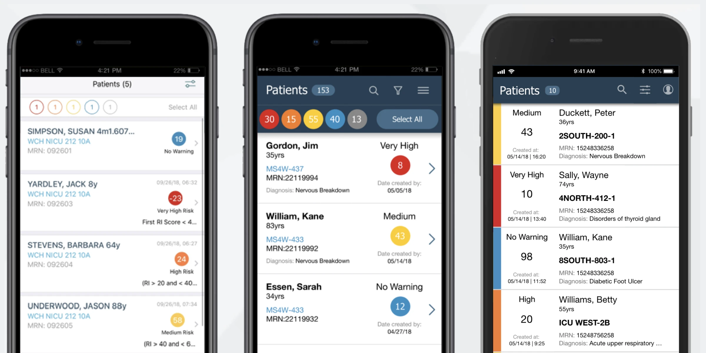
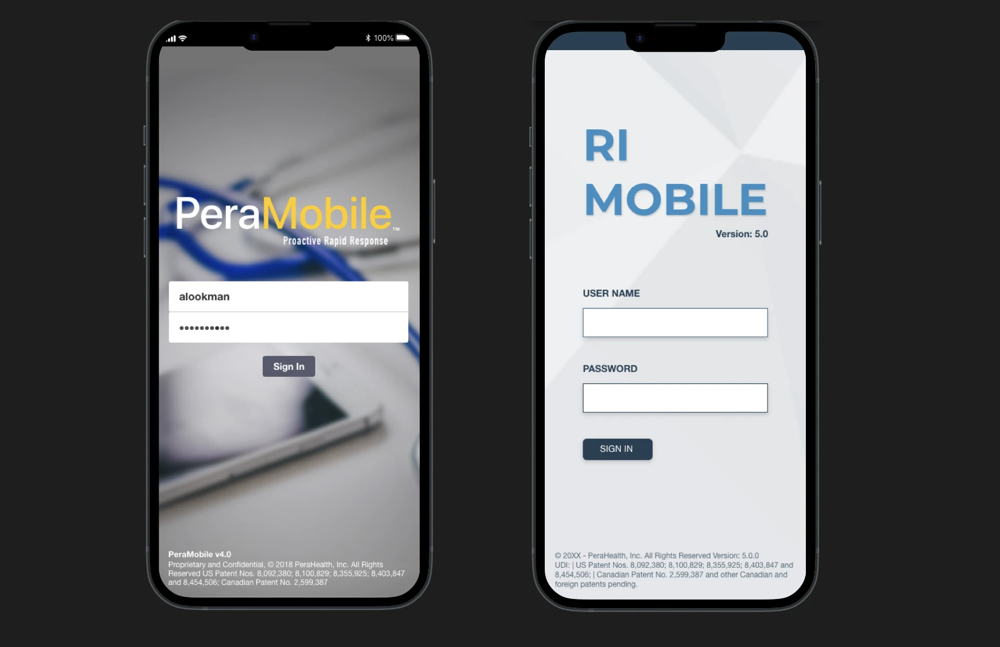
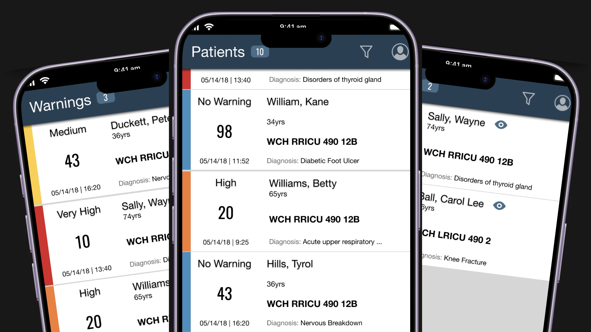
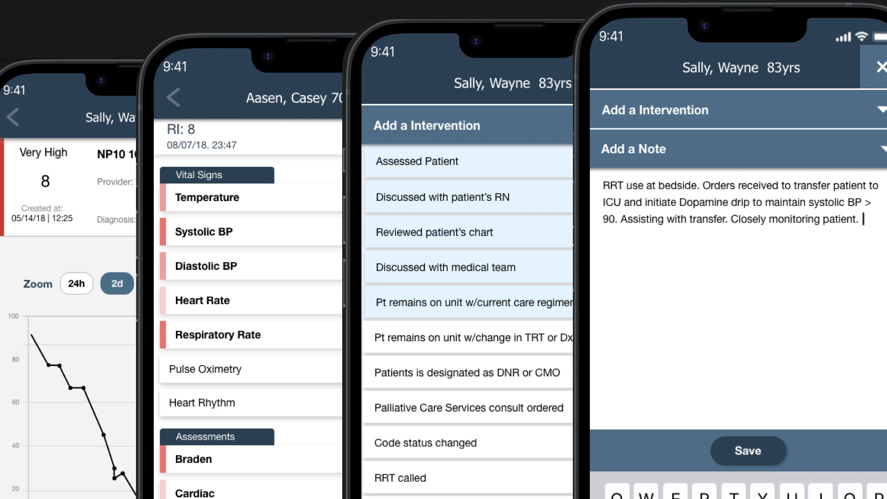
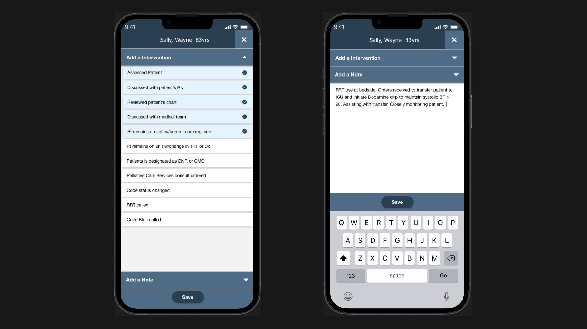

Healthcare / Mobile
Rothman Index Mobile App
Real time patient acuity monitoring for clinical teams on the go

The Problem
Clinical staff needed real time patient acuity data at the bedside, but the existing desktop only Rothman Index dashboard was impractical for nurses moving between rooms. Delayed access to deterioration alerts put patient safety at risk.
Constraints
- FDA 508 clearance requirements — strict regulatory review process
- WCAG 2.1 AA accessibility compliance for clinical environments and clearance approval.
- Must work on both iOS and Android with intermittent hospital Wi-Fi
- Integration with existing HL7/FHIR data pipelines
- Nurses have seconds, not minutes, to interpret patient status
Research
Methods
- Reviewed charge nurses and hospitalists reports and feedback on alert fatigue
- Analyzed usage logs from existing desktop dashboard
- Worked with former rapid response team nurses to record clinical patient workflows to streamline application visuals
Key Insights
- Nurses check patient status at glances between other tasks
- Color coded severity is the fastest signal for reporting not just numbers alone
- Alert fatigue from hospital systems has caused real alerts to be ignored
- Charge nurses need unit level views; bedside nurses need patient level views, and rapid response nurse need full hospital views.
Process
User Flows


Wireframes


Iterations


Final Design
Key Screens



Design System
Built on a shared design system with the desktop dashboard. Color tokens, typography scale, and component library maintained in AdobeXD with dev-ready specs I used to help engineering achieve perfect replication in code base.
Collaboration
Product Manager — prioritization, FDA submission coordination
Clinical User Testing — validation of alert thresholds
iOS & Android engineers — feasibility reviews, handoff
QA team — accessibility audit, device matrix testing
Delivered annotated and developed AdobeXD specs with interaction notes, component documentation, and a prototype for FDA reviewer walkthroughs. Wireframe full workflows for FDA testing approval.
Outcome
- FDA 508 clearance achieved on first submission
- Adopted across 10+ hospital units within 6 months of launch
- Reduced average alert response time
- WCAG 2.1 AA compliant across all screens
"The mobile app gave our nurses the situational awareness they needed without adding to their cognitive burden."